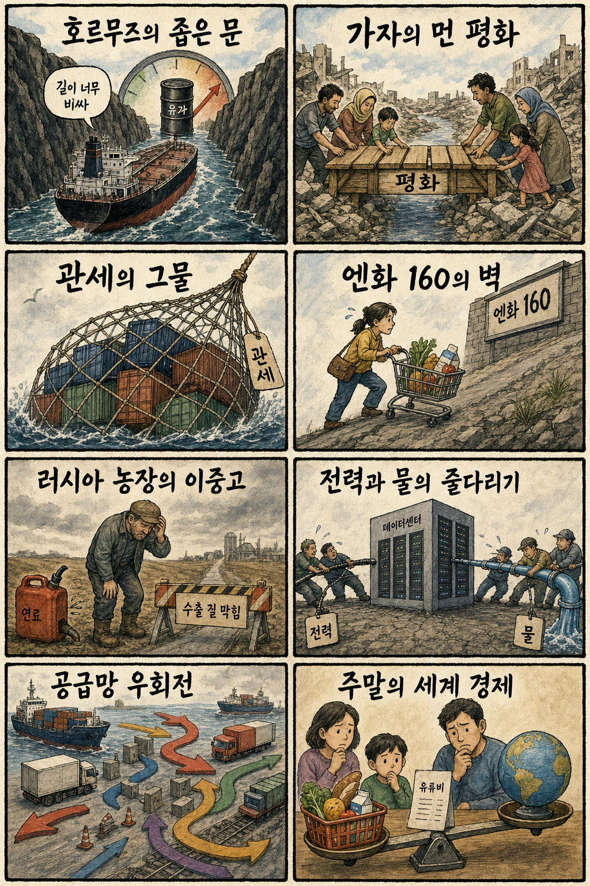
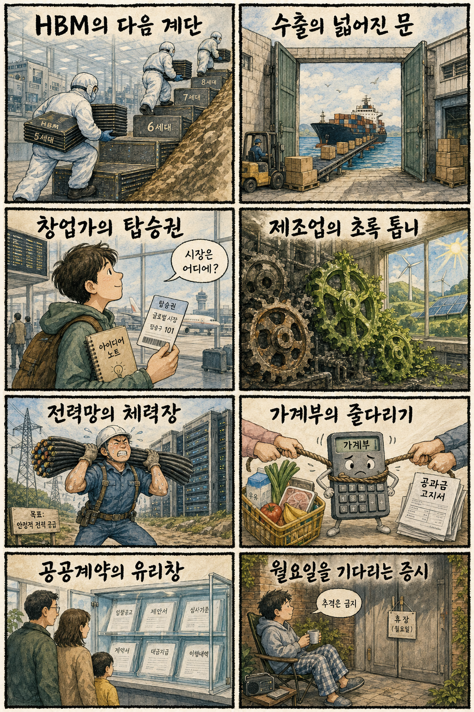

01
아마존 15.32% 급등 — AWS가 AI 투자 우려 완화
내용요약 AWS 호실적과 예상치를 웃돈 실적이 AI 설비투자의 회수 가능성을 보여주며 주가가 271.58달러로 급등했습니다.
예상여파 클라우드·데이터센터·AI칩 공급망 심리에 우호적이지만 대형 갭 상승 뒤 단기 변동성은 경계해야 합니다.
MORNING_BRIEFING_20260802
작성 시각: 2026-08-02 06:40 KST · 직전 미국 정규장과 2026-08-02 KST 당일 공개 기사 기준
미국의 마지막 정규장인 7월 31일에는 다우 +0.53%, S&P 500 +0.70%, 나스닥 +1.00%로 상승했습니다. 아마존과 AI 인프라주가 위험선호를 되살렸지만 애플·레딧 급락처럼 실적 차별화도 컸습니다. 오늘은 일요일로 한국 증시가 휴장하며, 다음 거래일에는 전일 KOSPI +17.91% 급등 뒤 갭과 과열 관리가 우선입니다.
| 지수 | 종가 | 등락률 | 한국 증시 영향 |
|---|---|---|---|
| 다우존스 | 52,485.03 | +0.53% | 경기민감주를 포함한 위험선호 회복에 우호적 |
| S&P 500 | 7,489.72 | +0.70% | 대형 기술주 실적이 한국 대형주 심리를 지지 |
| 나스닥 종합 | 25,373.85 | +1.00% | AI 인프라 낙관이 국내 반도체 심리에 직접 호재 |
마지막 정규장에서 나스닥은 1.00% 올랐습니다.
SMR·전력망·냉각 인프라가 데이터센터 확장의 핵심입니다.
한국 주식은 거래되지 않으며 월요일 시초가 추격을 경계합니다.
과열과 검증 표본 부족으로 공식 추천은 없습니다.
8월 1일 보고서는 한국 증시 휴장과 과열 제외 원칙에 따라 공식 추천을 내지 않았습니다. 오늘도 휴장이라 새 수익률 관측치는 없으며, 게시 당시 판단을 사후에 바꾸지 않습니다.
| 지수 | 종가 | 등락률 | 해석 |
|---|---|---|---|
| 다우존스 | 52,485.03 | +0.53% | 경기민감주를 포함한 위험선호 회복 |
| S&P 500 | 7,489.72 | +0.70% | 대형 기술주 실적이 지수 심리를 지지 |
| 나스닥 종합 | 25,373.85 | +1.00% | AI 인프라 낙관이 기술주 반등을 주도 |
클라우드, AI 데이터센터, 반도체·HBM, 전력·냉각 인프라
스마트폰 부품, 계약 기대 미충족 플랫폼, 유가 민감 항공·화학, 과열 테마주
내용요약 AWS 호실적과 예상치를 웃돈 실적이 AI 설비투자의 회수 가능성을 보여주며 주가가 271.58달러로 급등했습니다.
예상여파 클라우드·데이터센터·AI칩 공급망 심리에 우호적이지만 대형 갭 상승 뒤 단기 변동성은 경계해야 합니다.
내용요약 애플은 308.91달러로 밀리며 대형 기술주 안에서도 실적과 전망에 따른 차별화가 나타났습니다.
예상여파 국내 부품주는 지수 상승보다 고객별 출하 전망과 주문 가시성을 따로 확인할 필요가 있습니다.
내용요약 실적은 기대를 웃돌았지만 시장이 기대한 AI 데이터 계약 소식이 없다는 보도와 함께 140.67달러로 급락했습니다.
예상여파 AI 서사가 계약으로 확인되지 않으면 고평가 플랫폼의 하방 변동성이 커질 수 있습니다.
내용요약 전일 현금흐름 우려로 급락했던 메타가 기술주 전반의 AI 낙관 회복 속 556.71달러로 반등했습니다.
예상여파 AI 투자비 우려는 남아 있어 매출 성장과 잉여현금흐름의 동행 여부가 재평가를 좌우합니다.
내용요약 클라우드 기업의 성과가 AI 인프라 수요 신뢰를 높이며 엔비디아가 200.75달러로 올랐습니다.
예상여파 국내 HBM 심리에는 우호적이나 전일 상한가·과열 종목은 추격보다 가격 안정 확인이 먼저입니다.
오늘은 일요일로 한국 증시가 열리지 않습니다. 다음 거래일에는 미국 클라우드·AI칩 강세와 국내 8월 반등 전망이 심리를 지지할 수 있습니다. 다만 7월 31일 SK하이닉스 상한가, 삼성전자 +26.81%, KOSPI +17.91% 이후라 과도한 갭 상승 종목은 제외해야 합니다. 외국인 현·선물 수급, 원·달러 환율, 첫 30분 가격 안정을 확인하기 전에는 추격하지 않는 전략이 적절합니다.
오늘은 추천 없음 — 현금 관망
한국 증시 휴장일이고 전 거래일 시장이 비정상적으로 급등했습니다. 전일까지 수급·컨센서스, 30건 이상 유사 조건 확률 보정, 예상 손익비 1.5 이상을 동시에 검증한 후보가 없어 임의의 점수와 확률을 제시하지 않습니다.
관심 연결종목 삼성전자·SK하이닉스(HBM), 두산에너빌리티(데이터센터 전력)는 월요일 관찰 대상일 뿐 매수 추천이 아닙니다. 예상 갭 상승 시 추격매수 금지입니다.
반도체 갭과 첫 30분 가격 안정을 확인합니다.
점진적 반등 전망이 실제 수급으로 이어지는지 봅니다.
SMR·전력망·냉각의 계약 가시성을 점검합니다.
해상 물류 타격 확대와 운임·보험료 변화를 봅니다.
핵심 요약: AI 경쟁은 모델 성능을 넘어 전력·핵심광물·HBM·로봇 실증을 함께 확보하는 산업전으로 확장됐습니다. 데이터센터의 연속 전력과 중국 메모리 추격, 국내 피지컬 AI 생태계가 오늘의 핵심 축입니다.
내용요약 롤스로이스가 소형모듈원전과 연속 전력 공급을 앞세워 AI 데이터센터의 대규모 전력 수요를 공략한다는 보도입니다.
예상여파 데이터센터 전력 병목이 장기화하면 원전·전력망·비상전원과 냉각 설비를 묶은 인프라 투자가 확대될 수 있습니다.
내용요약 대통령 순방 과정에서 대규모 AI 투자 협력과 핵심광물 공급망 다변화를 추진한 내용을 전한 보도입니다.
예상여파 AI 자본과 광물 조달을 함께 확보하려는 외교는 반도체·배터리 공급망의 안정성과 국내 기업의 해외 수주 기회에 영향을 줄 수 있습니다.
내용요약 중국 창신메모리의 상장 추진을 계기로 글로벌 메모리 시장이 4강 구도로 재편될 가능성을 짚은 보도입니다.
예상여파 공급자 확대는 장비·소재 수요를 늘릴 수 있지만 범용 메모리 가격 경쟁과 기술 추격 위험도 키울 수 있습니다.
내용요약 삼성전자가 장기공급계약 전략을 강화하며 차세대 HBM 시장의 주도권 회복을 추진한다는 보도입니다.
예상여파 고객 인증과 실제 양산 일정이 뒷받침되면 HBM 점유율과 수익성 기대가 개선될 수 있으나 계약 조건과 공급능력 확인이 중요합니다.
내용요약 SK텔레콤이 피지컬 AI 스타트업 8곳과 협력해 로보틱스 생태계를 넓힌다는 당일 보도입니다.
예상여파 통신·클라우드와 로봇 하드웨어의 결합이 빨라지며 산업 자동화 실증과 스타트업 판로 확대를 촉진할 수 있습니다.
핵심 요약: 러시아와 우크라이나의 인프라·해상 물류 타격이 거세지는 가운데 가자 평화 로드맵과 동맹국의 통상·안보 재편이 동시에 진행되고 있습니다. 기술 동맹과 공급망 외교도 국제질서의 핵심 수단으로 부상했습니다.
내용요약 러시아가 키이우 공습을 이어가는 가운데 우크라이나는 러시아 컨테이너선을 격침했다고 전한 보도입니다.
예상여파 인프라와 해상 물류를 겨냥한 상호 타격이 확대되면 휴전 협상과 곡물·운송 경로의 불확실성이 커질 수 있습니다.
내용요약 우크라이나 드론 공격으로 러시아 화물선이 침몰했지만 선원은 모두 구조됐다는 보도입니다.
예상여파 민간·상업 선박 위험이 부각되면 흑해권 운임과 보험료가 오르고 교역 경로가 추가로 위축될 수 있습니다.
내용요약 하마스와 이스라엘 충돌을 다루기 위한 평화위원회가 15개 항의 로드맵을 발표했다는 보도입니다.
예상여파 실행 주체와 안전보장, 구호 접근이 구체화돼야 긴장이 낮아지며 합의 지연 시 중동 위험 프리미엄은 이어질 수 있습니다.
내용요약 미국 우선 통상·안보 기조 아래 유럽과 아시아 동맹국이 서로 다른 생존 전략을 택하는 흐름을 분석한 보도입니다.
예상여파 방위비와 관세, 공급망 재편이 동시에 진행되면 수출기업은 지역별 규제와 현지화 전략을 더 세분화해야 합니다.
내용요약 한국이 샌프란시스코 AI 협력과 외교 다변화로 변하는 국제 경제질서에 대응하는 행보를 전한 보도입니다.
예상여파 기술 동맹이 연구개발·인재·투자 연결로 이어지면 국내 AI 생태계에 기회가 생기지만 성과의 국내 환류가 관건입니다.

핵심 요약: 8월 코스피 반등 기대와 반도체 호황이 부각됐지만 성장률 둔화와 금리 부담이 함께 제기됐습니다. AI 도입 뒤 인력 재채용과 전기공사 품질 규제는 기술 전환이 사람·안전 기준과 함께 가야 함을 보여줍니다.
내용요약 증권가가 최근 악재의 가격 반영과 수급 정상화를 근거로 8월 코스피의 점진적 반등 가능성을 제시한 보도입니다.
예상여파 급등락 뒤 반등 기대가 있어도 지수 경로보다 실적과 수급 확인이 우선이며 시초가 추격은 변동성 위험이 큽니다.
내용요약 한국의 분기 성장률 순위가 1분기 선두권에서 2분기 9위로 낮아졌다는 비교 보도입니다.
예상여파 기저효과를 감안하더라도 내수와 수출의 지속성 점검이 필요해 하반기 재정·통화정책 논의에 영향을 줄 수 있습니다.
내용요약 AI가 업무를 대체할 것으로 보고 인력을 줄였던 일부 기업이 다시 채용에 나서는 현상을 다룬 보도입니다.
예상여파 자동화의 한계와 검수 비용이 드러나면서 AI 도입은 단순 감원보다 직무 재설계와 사람-AI 협업 중심으로 이동할 수 있습니다.
내용요약 반도체 호황과 AI 투자 붐이 경기·물가에 미치는 영향 속에서 금리 인상 가능성을 짚은 보도입니다.
예상여파 투자 확대는 성장에 긍정적이지만 금리 부담이 높아지면 고평가 성장주와 차입 의존 기업의 할인율 위험이 커질 수 있습니다.
내용요약 정부가 부실 전기공사에 벌점을 부과하고 입찰을 제한하는 제도 도입을 검토한다는 보도입니다.
예상여파 안전 기준 강화는 시공 품질을 높이는 반면 중소 시공사의 관리 비용과 공공 입찰 기준을 높일 수 있습니다.
